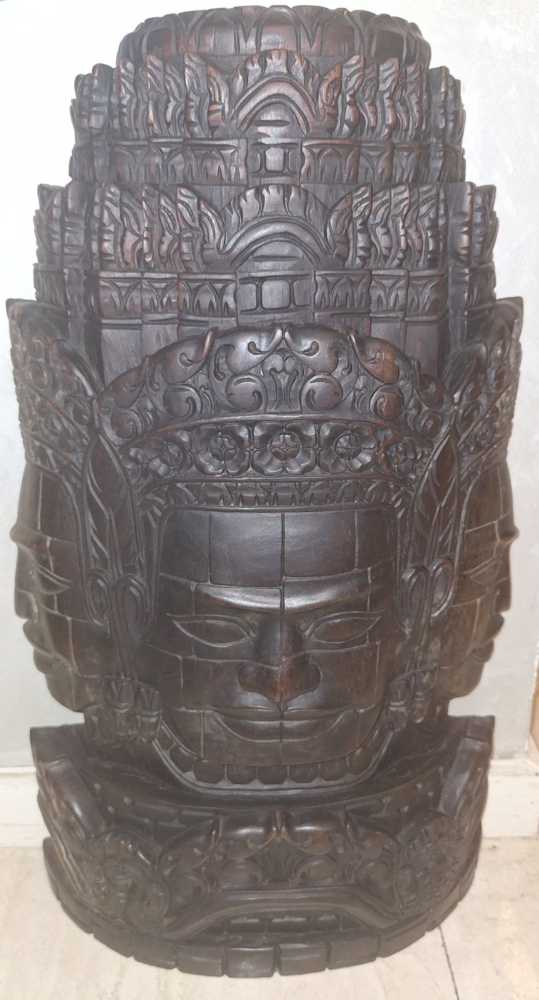
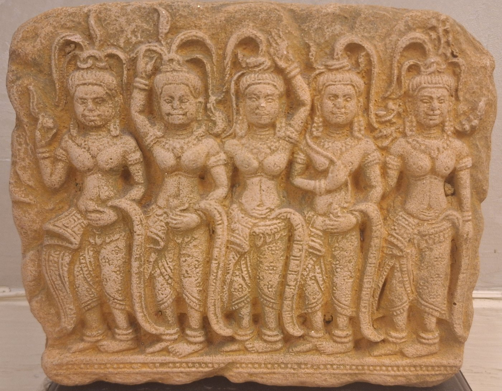

The Temple as Cosmos.Templul ca și cosmos.
On the Southeast Asian mainland, the collection reaches the world of the Khmer through two travelling objects — not temple antiquities but contemporary souvenirs after Angkor: a carved wooden face of Avalokiteshvara from the Bayon, and a sandstone frieze of Apsaras from the galleries of Angkor Wat. Modest in origin, they carry an outsized cosmology. Angkor Wat is a literal axis mundi, its towers the peaks of Mount Meru and its moat the cosmic ocean — a “Centre of the World” so central to Khmer identity that Cambodia is the only nation whose flag depicts a building. Read through Mircea Eliade, these small stones from a great mountain become portable temples. The full argument is set out in the Journal.Pe continentul Asiei de Sud-Est, colecția atinge lumea khmerilor prin două obiecte călătoare — nu antichități de templu, ci suveniruri contemporane după Angkor: un chip de lemn sculptat al lui Avalokiteshvara de la Bayon și un friz de gresie cu apsare din galeriile templului Angkor Wat. Modeste ca origine, ele poartă o cosmologie uriașă. Angkor Wat este un axis mundi în sens propriu, turnurile sale fiind piscurile Muntelui Meru, iar șanțul — oceanul cosmic — un „Centru al Lumii” atât de esențial identității khmere încât Cambodgia este singura națiune al cărei drapel înfățișează o clădire. Citite prin Mircea Eliade, aceste pietre mărunte dintr-un munte mare devin temple portabile. Întregul argument este expus în Jurnal.

Cambodia · Carved wood, after the Bayon at Angkor Thom
A simplified reproduction of the serene “Khmer smile” of the Bodhisattva of Compassion; the tiered headdress quotes the temple towers, themselves images of Mount Meru. Read the essay →O reproducere simplificată a seninului „surâs khmer” al Bodhisattvei compasiunii; coafura etajată citează turnurile templului, ele însele imagini ale Muntelui Meru. Citește eseul →

Cambodia · Carved sandstone, after Angkor Wat
Five celestial dancers in classical Khmer style — the pleated sampot, elaborate jewellery and delicate mudras of the devatas who adorn the galleries of Angkor Wat. Read the essay →Cinci dansatoare celeste în stil khmer clasic — fusta sampot, podoabele bogate și mudra-le delicate ale devata-lor care împodobesc galeriile templului Angkor Wat. Citește eseul →